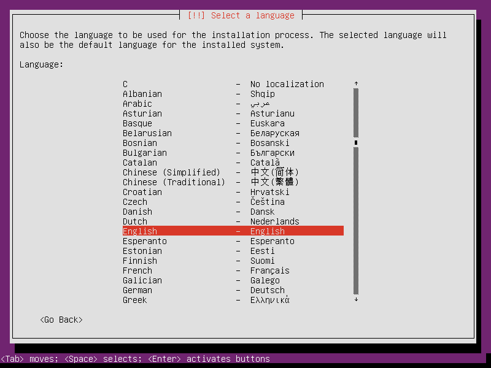
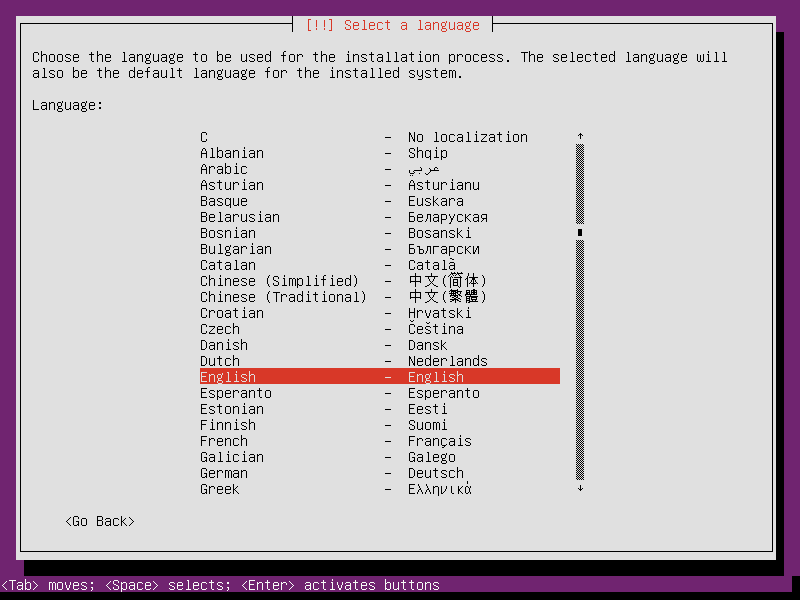
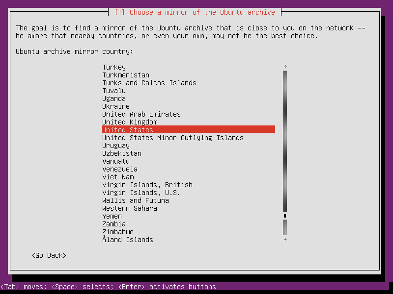
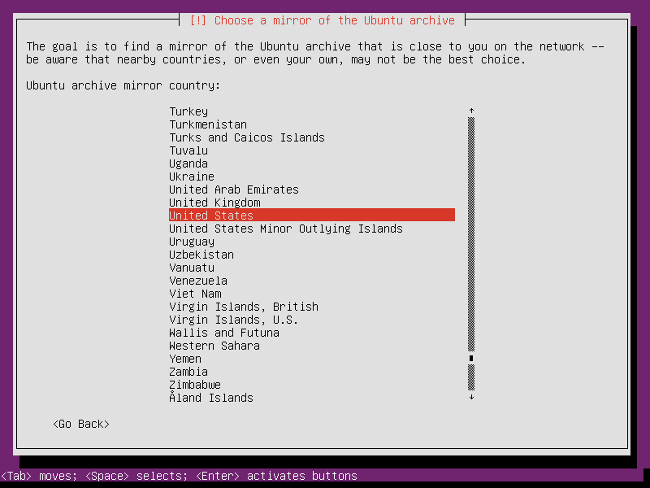
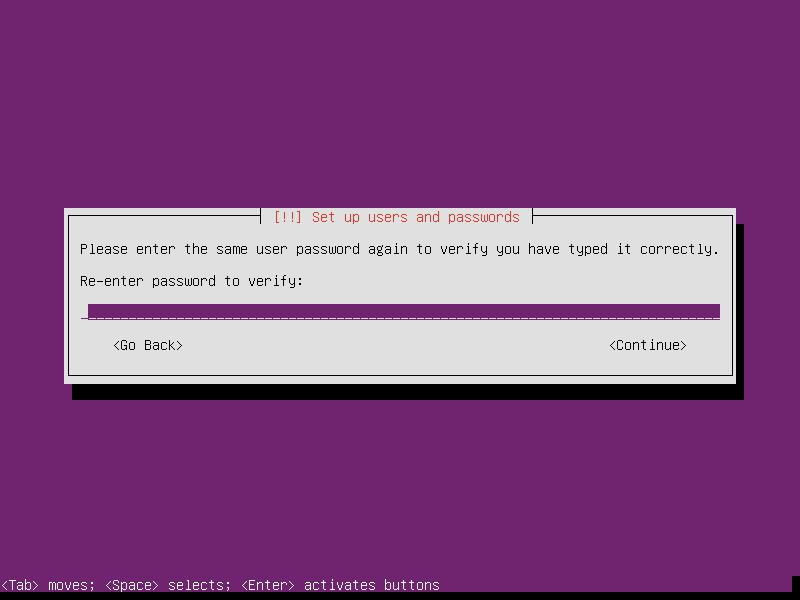
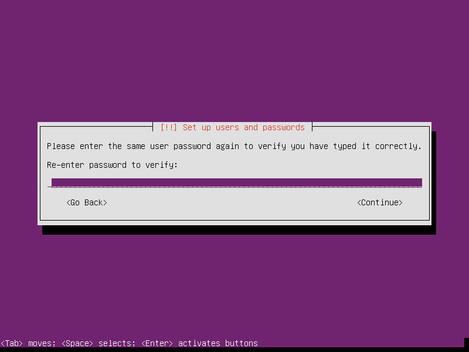
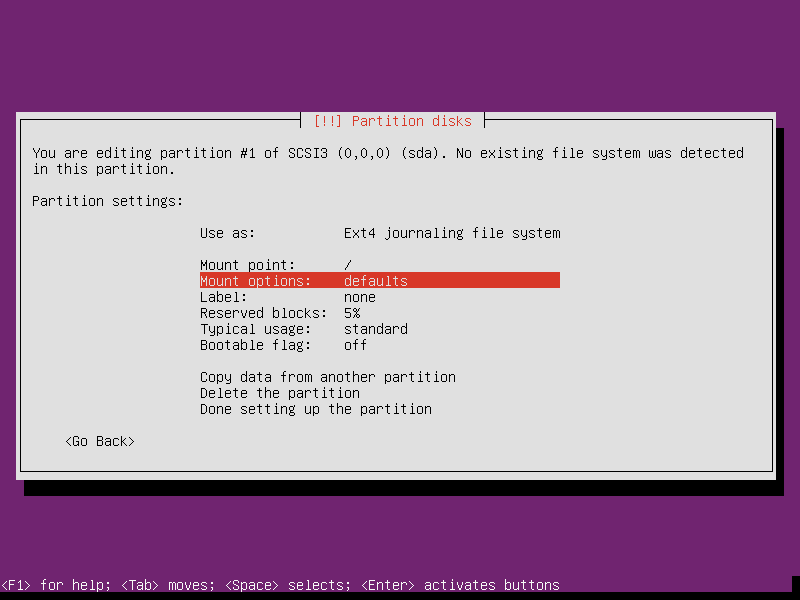
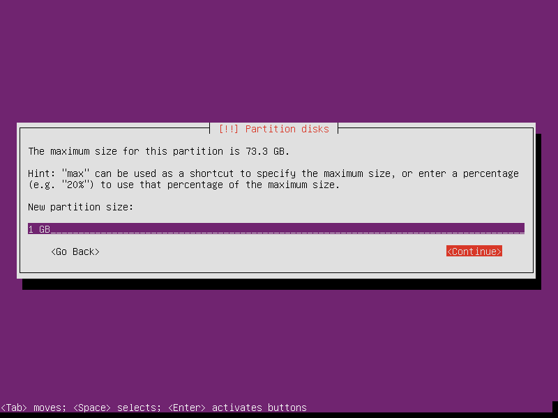
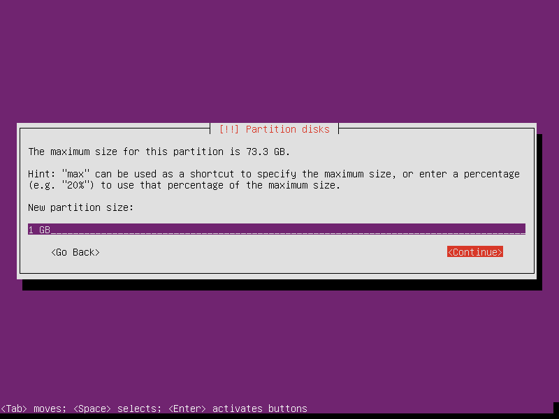
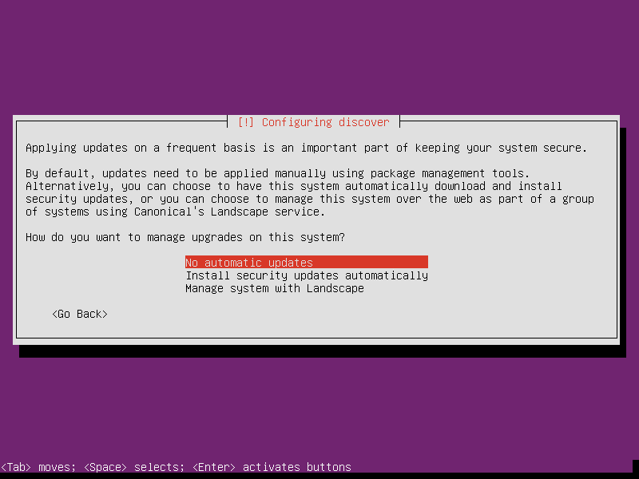

Ubuntu 14.04 "Trusty Tahr" is a long-term support release (till 2019) of the popular Linux operating system [1]. I use Ubuntu's minimal install image to create a lightweight, console-only base configuration that can be customized for various tasks and alternate desktops.
Below is a visual walk-through of a sample Ubuntu setup that makes use of an entire storage device divided into 3 partitions: unencrypted root and LUKS encrypted swap + home.
Let's go!
0. Installer
Download a 64-bit Ubuntu mini.iso (32-bit for older machines) and copy the image to a USB stick or prepare a USB boot device.
1. Configure
 



 



 


2. Partitions
In the example below we create 3 partitions on the disk:
- sda1 is a 20GB root partition
- sda5 is a 1GB LUKS encrypted swap partition using a random key
- sda6 uses the remaining space as a LUKS encrypted home partition using a passphrase


Setting Mount options to noatime decreases write operations and boosts drive speed.



 



If the hard disk has not been securely wiped prior to installing Ubuntu (using a utility like DBAN) you may want to configure Erase data: yes. Note, however, that depending on the size of the disk this operation can last several hours.


Reserved blocks can be used by privileged system processes to write to disk - useful if a full filesystem blocks users from writing - and reduce disk fragmentation. On large, non-root partitions extra space can be gained by reducing the 5% reserve set aside by Ubuntu to 1%.


3. Install packages and finish up
Leave all tasks unmarked if you wish to start with a minimal, console-only base configuration ready for further customization. This task menu can be accessed post-install by running:
$ sudo tasksel


System will display a passphrase prompt to unlock encrypted home partition.


Happy hacking!
Notes
| [1] | List of releases. |